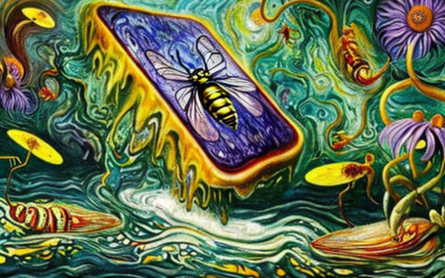
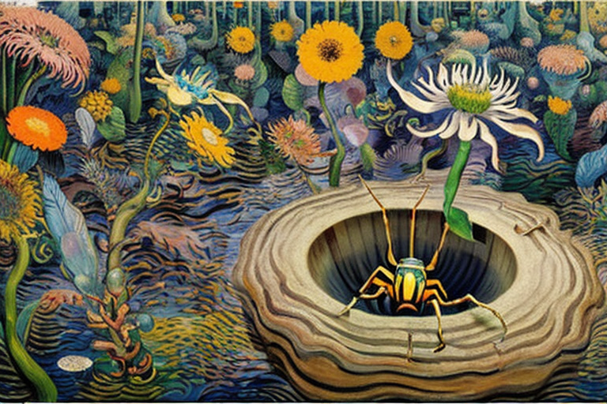
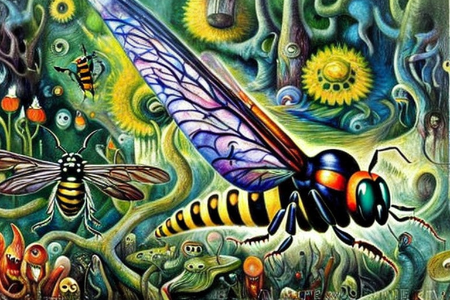
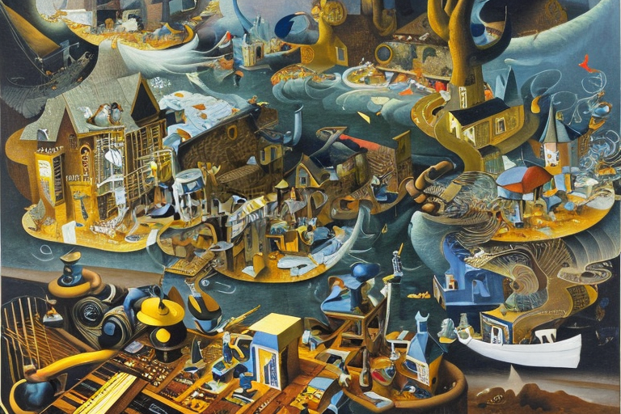
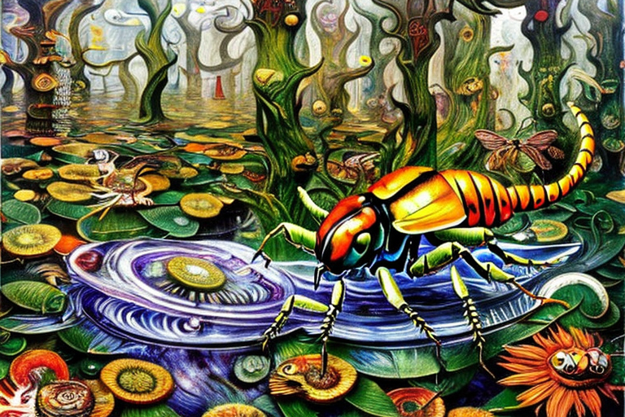

Η παρασιτική σφήκα και η θεραπεία του καρκίνου
Αρχική Σελίδα
Πίνακας Περιεχομένων
Η εκρηκτική άνοδος της αγοράς

Η ανοδική πορεία των μετοχών μαινόταν, και οι επενδυτές του χρηματιστηρίου έριχναν μετρητά σε οτιδήποτε ακουγόταν σαν να είχε έστω και την παραμικρή πιθανότητα να βγάλει λεφτά. Και μετά, άκουσαν για μία παρασιτική σφήκα με ένα τσίμπημα που θα μπορούσε να θεραπεύσει τον καρκίνο.
Οι επενδυτές έριξαν εκατομμύρια στην εταιρεία που είχε ανακαλύψει τη σφήκα, ελπίζοντας να κερδίσουν χρήματα στην αναδυόμενη μεγάλη βιομηχανία. Και καθώς οι τιμές των μετοχών εκτοξεύονταν στα ύψη, κανείς δεν σταμάτησε να σκεφτεί τους κινδύνους.
Αλλά η σφήκα δεν ήταν συνηθισμένο έντομο. Είχε εξελιχθεί εδώ και εκατομμύρια χρόνια για να γίνει αρπακτικό και δολοφόνος και το κεντρί της περιείχε ένα περίπλοκο μείγμα χημικών ουσιών που θα μπορούσαν να παραλύσουν ακόμη και το πιο σκληρό θήραμα. Οι επιστήμονες της εταιρείας πέρασαν μήνες αναλύοντας το δηλητήριο, προσπαθώντας να απομονώσουν την ένωση που ήταν υπεύθυνη για τα αποτελέσματα που θεραπεύουν τον καρκίνο.
Δεν ήταν εύκολο. Το δηλητήριο αποτελούνταν από εκατοντάδες διαφορετικές χημικές ουσίες, καθεμία πιο περίπλοκη από την προηγούμενη. Αλλά τελικά, το βρήκαν: ένα μικρό μόριο που δεν είχε ξαναδεί. Το ονόμασαν “Σφηκοξίνη” και προσπαθούσαν να το κατοχυρώσουν με δίπλωμα ευρεσιτεχνίας και να το μετατρέψουν σε υπερπαραγωγικό φάρμακο.
Η εταιρεία ξόδεψε εκατομμύρια περισσότερα για να εξευγενίσει την ένωση, να την δοκιμάσει σε ζώα και ανθρώπους και τελικά, μετά από χρόνια δουλειάς, είχε ένα φάρμακο που θα μπορούσε να θεραπεύσει τον καρκίνο σχεδόν στο 90% των περιπτώσεων. Οι τιμές των μετοχών εκτινάχθηκαν στα ύψη και τα στελέχη και οι επενδυτές πανηγύρισαν την επιτυχία τους.
Αλλά μετά, η σφήκα αντεπιτέθηκε. Στην άγρια φύση, το τσίμπημα της σφήκας ήταν θανατηφόρο μόνο για τη λεία της. Αλλά στο εργαστήριο, οι ερευνητές είχαν δημιουργήσει κατά λάθος μια νέα γενιά σφήκας με ισχυρότερο δηλητήριο. Και όταν κατά λάθος απελευθέρωσαν μια από αυτές τις μεταλλαγμένες σφήκες στη φύση, άρχισε γρήγορα να εξαπλώνεται.
Οι σφήκες άρχισαν να επιτίθενται στους ανθρώπους και τα αποτελέσματα ήταν καταστροφικά. Το τσίμπημα προκαλούσε μια αντίδραση στο ανθρώπινο σώμα που ήταν ακόμη πιο θανατηφόρα από τον καρκίνο που θεράπευε. Άνθρωποι πέθαιναν μέσα σε λίγα λεπτά από το τσιμπήματα και ο κόσμος παρακολουθούσε με τρόμο την πτώση της τιμής των μετοχών της εταιρείας.
Οι ανελέητες επιδρομές

Τα νέα για τις θανατηφόρες σφήκες είχαν εξαπλωθεί πολύ πέρα από τον οικονομικό κόσμο και δεν άργησε να συγκεντρωθεί μια ομάδα κυνηγών για να εντοπίσει και να εξαλείψει την απειλή.
Με επικεφαλής έναν γκριζαρισμένο παλαίμαχο του Αμαζονίου, η ομάδα ξεκίνησε για τη ζούγκλα, οπλισμένη μόνο με την πονηριά τους και τα όπλα τους.
Αλλά οι σφήκες ήταν άπιαστες. Ζούσαν σε μικρές, υπόγειες φωλιές που ήταν σχεδόν αδύνατο να αποκαλυφθούν. Και όταν ενοχλούνταν, ξεχύνονταν, επιτιθόμενες με αγριότητα που κυρίευε με φόβο ως και τους πιο ατρόμητους κυνηγούς.
Η ομάδα πέρασε μέρες ψάχνοντας τη ζούγκλα, ιχνηλατώντας σφήκες και προσπαθούσε να εντοπίσει τις φωλιές. Ακολουθούσαν σφήκες με το χαρακτηριστικό βουϊτό τους, που ακουγόταν από εκατοντάδες μέτρα μακριά. Έψαχναν για σημάδια σκαμμένης γης, γνωρίζοντας ότι οι σφήκες τρυπούσαν τη γη για να κρύψουν τις φωλιές τους.
Αλλά οι σφήκες ήταν έξυπνες. Είχαν εξελιχθεί με περίσσεια πονηριά και ήξεραν πώς να αποφεύγουν τους εχθρούς τους. Έφτιαχναν φωλιές δόλωμα, οδηγώντας τους κυνηγούς σε πλασματικές φωλιές μέσα στη ζούγκλα. Και όταν ένιωθαν κίνδυνο, γρήγορα υποχωρούσαν υπόγεια, χωρίς να αφήνουν κανένα ίχνος της παρουσίας τους.
Παρά τις προκλήσεις, οι κυνηγοί ήταν αποφασισμένοι να τα καταφέρουν. Ήξεραν ότι οι σφήκες αποτελούσαν απειλή για την ανθρωπότητα και ήταν πρόθυμοι να διακινδυνεύσουν τα πάντα για να εξαλείψουν τον κίνδυνο. Ανέπτυξαν νέες τακτικές, χρησιμοποιώντας ελικοπτεράκια και άλλες τεχνολογίες για να εντοπίσουν τις φωλιές από ψηλά.
Τελικά, μετά από εβδομάδες αναζήτησης, βρήκαν την πρώτη τους φωλιά. Ήταν κρυμμένη κάτω από τις ρίζες ενός γιγαντιαίου δέντρου και το προστατεύαν ένα σμήνος κακιασμένων σφηκών. Οι κυνηγοί πλησίασαν προσεκτικά, γνωρίζοντας ότι το παραμικρό λάθος μπορεί να σημαίνει βέβαιο θάνατο.
Φορούσαν εξειδικευμένες στολές που τους προστάτευαν από τα τσιμπήματα και κουβαλούσαν φλογοβόλα για να κάψουν τις φωλιές. Τις αντιμετώπισαν γρήγορα και αποτελεσματικά, και σύντομα οι σφήκες ήταν παρελθόν.
Η ομάδα προχώρησε, εντοπίζοντας περισσότερες φωλιές και εξαλείφοντας τις σφήκες μία προς μία. Και καθώς κυνηγούσαν, έμαθαν περισσότερα για τις συνήθειες της σφήκας Βέσπουλα ξανθόπτερα. Ανακάλυψαν ότι οι σφήκες ήταν ιδιαίτερα κοινωνικές, ζούσαν σε μεγάλες αποικίες και συνεργάζονταν για να υπερασπιστούν τις φωλιές τους.
Έμαθαν επίσης ότι οι σφήκες είχαν πολύ ανεπτυγμένη όσφρηση, την οποία χρησιμοποιούσαν για να επικοινωνούν μεταξύ τους και να εντοπίζουν τροφή. Ανακάλυψαν ακόμη ότι οι σφήκες ήταν ιδιαίτερα προσαρμόσιμες, ικανές να επιβιώσουν σε ένα ευρύ φάσμα περιβαλλόντων και κλίματων.
Η μάχη με το τέρας της ζούγκλας

Καθώς η ομάδα των κυνηγών έψαχνε βαθύτερα στη ζούγκλα του Αμαζονίου, συνάντησε ένα πλάσμα που αψηφούσε κάθε εξήγηση. Μια γιγάντια σφήκα, ίσα με ένα μικρό αυτοκίνητο, με φτερά που χτυπούσαν με ταχύτητα αόρατα στην ματιά. Οι κυνηγοί άκουγαν το βουητό των φτερών ένα χιλιόμετρο μακριά.
Η σφήκα δεν έμοιαζε με άλλο ζώο στον πλανήτη. Το σώμα της ήταν καλυμμένο με μια χοντρή, μεταλλική πανοπλία που φαινόταν αδιαπέραστη από τις σφαίρες. Ακόμη και όταν οι κυνηγοί εξαπέλυσαν καταιγισμό πυροβολισμών, η σφήκα παρέμενε αλώβητη.
Οι κυνηγοί κατάλαβαν γρήγορα ότι είχαν να κάνουν με ένα πλάσμα που ήταν πέρα από την κατανόησή τους. Προσπάθησαν να υποχωρήσουν, αλλά η σφήκα ήταν πολύ γρήγορη. Εκτοξεύτηκε στον αέρα με αστραπιαία ταχύτητα, γκρεμίζοντας κάτω τους κυνηγούς με θανατηφόρα ακρίβεια.
Προσπάθησαν να αποφύγουν το πλάσμα, αλλά τίποτε δεν ωφελούσε. Η σφήκα ήταν πολύ ευκίνητη, πολύ δυνατή. Έμοιαζε να προεξοφλούσε κάθε κίνησή τους, κόπτοντας τις οδούς διαφυγής τους και επιτιθέμενη με μια μανία που τους ανάγκαζε σε άτακτη υποχώρηση.
Οι κυνηγοί πάλευαν για τη ζωή τους, και άρχισαν να παρατηρούν κάτι περίεργο στις κινήσεις της σφήκας. Ήταν σαν το πλάσμα να περίμενε κάθε τους κίνηση, και προέβλεπε τις κινήσεις τους πριν καν τις πραγματοποιήσουν.
Και τότε κατάλαβαν την αλήθεια. Η σφήκα επικοινωνούσε με τις άλλες σφήκες στην αποικία της, χρησιμοποιώντας ένα περίπλοκο σύστημα φερομονών και γλώσσα του σώματος για να συντονίσει τις επιθέσεις της. Ήταν σαν η σφήκα να ήταν μέρος ενός κυψελικού εγκεφάλου, μιας συλλογικής συνείδησης που υπερέβαινε την ατομική σκέψη.
Έμειναν έκπληκτοι και τρομοκρατημένοι με την ανακάλυψή τους. Έπεσαν πάνω σε ένα πλάσμα που ήταν πέρα από την κατανόησή τους, ένα ον που υπήρχε σε επίπεδο συνείδησης πέρα της ανθρώπινης κατανόησης.
Όμως, ακόμη και όταν προσπαθούσαν να συμβιβαστούν με αυτή τη νέα πραγματικότητα, ήξεραν ότι έπρεπε να συνεχίσουν την μάχη. Δεν μπορούσαν να επιτρέψουν στη γιγάντια σφήκα να δραπετεύσει στον ευρύτερο κόσμο, όπου θα μπορούσε να προκαλέσει τον όλεθρο και την καταστροφή.
Οι κυνηγοί ανασυντάχθηκαν, ψάχνοντας μια νέα στρατηγική για να εξοντώσουν το πλάσμα. Γνώριζαν ότι τα συμβατικά όπλα ήταν άχρηστα ενάντια στην πανοπλία της σφήκας, έτσι στράφηκαν στην επιστήμη για μια λύση.
Ανέπτυξαν έναν νέο τύπου πυρομαχικών, χρησιμοποιώντας εξειδικευμένο κράμα σχεδιασμένο να διεισδύει στην πανοπλία της σφήκας. Οι σφαίρες ήταν ακριβές, αλλά οι κυνηγοί ήξεραν ότι ήταν η μόνη τους ελπίδα.
Επέστρεψαν στη ζούγκλα, οπλισμένοι με τα νέα τους πυρομαχικά και τις γνώσεις τους για το μυαλό της σφήκας. Μετά μιας σκληρής μάχης εναντίον του τερατώδους πλάσματος, εκτόξευαν τις νέες τους σφαίρες με θανατηφόρα ακρίβεια.
Οι σφαίρες σπινθήριζαν όταν συνέκρουαν με την πανοπλία της σφήκας. Οι κυνηγοί παρακολουθούσαν έκπληκτοι το πλάσμα να παραπαίει, οι κινήσεις του να γίνονται πιο αργές και λιγότερο ακριβείς. Έμοιαζε να αποσυνδέεται με το μυαλό της κυψέλης, και η συνείδησή του σιγά σιγά εξαφανιζόταν.
Τελικά, με μια τελευταία έκρηξη πυροβολισμών, οι κυνηγοί κατέρριψαν νεκρή τη γιγάντια σφήκα. Έπεσε στο έδαφος με ένα γδούπο, με τα φτερά της να χτυπούν ακόμα αδύναμα. Και καθώς οι κυνηγοί πλησίαζαν, μπορούσαν να δουν τα περίπλοκα σχέδια στην πανοπλία του, τις λεπτομέρειες της ανατομίας του που ήταν πέρα από την ανθρώπινη κατανόηση.
Οι κυνηγοί ορούσαν με δέος το πλάσμα που είχαν νικήσει, γνωρίζοντας ότι είχαν αντιμετωπίσει κάτι που ήταν πέρα από την κατανόησή τους. Και καθώς επέστρεφαν στον πολιτισμό, μπορούσαν να νιώσουν το βάρος της εμπειρίας τους να κρέμεται βαριά στις ψυχές τους. Γιατί ήξεραν ότι είχαν δει κάτι που δεν προοριζόταν για ανθρώπινα μάτια, κάτι που ανήκε σε έναν κόσμο πέρα από τον δικό μας.
Ο πανικός των επενδυτών

Καθώς διαδόθηκε η είδηση για τη νικη των κυνηγών επί της γιγάντιας σφήκας, άρχισε να επικρατεί πανικός μεταξύ των επενδυτών του Βιοσφήκας. Είχαν ρίξει εκατομμύρια δολάρια στην εταιρεία, πιστεύοντας ότι η σφήκα Ξανθόπτερα κρατούσε το κλειδί για τη θεραπεία του καρκίνου.
Αλλά τώρα, με αναφορές για την αδιαπέραστη πανοπλία και τις ικανότητες του μυαλού της κυψέλης της γιγάντιας σφήκας, οι επενδυτές άρχισαν να χάνουν την πίστη τους στην ικανότητα της εταιρείας να εκπληρώσει τις υποσχέσεις της. Οι τιμές των μετοχών έπεσαν κατακόρυφα, εξαλείφοντας δισεκατομμύρια δολάρια σε αγοραία αξία.
Τα στελέχη της Βιοσφήκας προσπάθησαν να καθησυχάσουν τους επενδυτές τους, επιμένοντας ότι η γιγάντια σφήκα ήταν μια ανωμαλία, ένα φρικιό της φύσης που δεν ήταν αντιπροσωπευτικό του είδους στο σύνολό του. Υποστήριξαν ότι η χημική δομή του τσιμπήματος της σφήκας ήταν ακόμα μια σημαντική ανακάλυψη στην έρευνα για τον καρκίνο και ότι συνέχιζαν να σημειώνουν πρόοδο στις μελέτες τους.
Όμως οι επενδυτές δεν πείστηκαν. Είχαν χάσει την πίστη τους στην εταιρεία και άρχισαν να ξεπουλούν τις μετοχές τους κατά σωρό. Οι τιμές των μετοχών συνέχισαν να πέφτουν, φτάνοντας σε χαμηλά επίπεδα ρεκόρ που απειλούσαν την ίδια την ύπαρξη της Βιοσφήκας.
Καθώς η εταιρεία πάλευε να ανακτήσει την επενδυτική της βάση, άρχισαν να κυκλοφορούν φήμες για την αληθινή φύση της σφήκας Ξανθόπτερας. Κάποιοι ισχυρίστηκαν ότι το πλάσμα δεν ήταν από αυτόν τον κόσμο, ότι είχε σταλεί στη Γη από κάποια κακόβουλη δύναμη.
Άλλοι σιγοψιθύριζαν για τις δυνατότητες του μυαλού της κυψέλης της σφήκας, υποδηλώνοντας ότι ήταν ένα σημάδι μιας συλλογικής νοημοσύνης που απειλούσε να καταπιεί όλη την ανθρωπότητα. Και άλλοι πάλι επεσήμαναν την αδιαπέραστη πανοπλία της γιγαντιαίας σφήκας, υποστηρίζοντας ότι ήταν απόδειξη ενός βιολογικού όπλου που είχε σχεδιαστεί για χρήση κατά της ανθρωπότητας.
Οι φήμες έριξαν λάδι στη φωτιά, προκαλώντας τον πανικό μεταξύ των επενδυτών να ενταθεί. Και καθώς οι τιμές των μετοχών συνέχισαν να πέφτουν, η μοίρα του Βιοσφήκας βρέθηκε σε κρίσιμο σημείο.
Όμως, παρά το χάος και την αβεβαιότητα, εξακολουθούσαν να υπάρχουν κάποιοι που πίστευαν στις δυνατότητες της σφήκας Ξανθόπτερας. Κωφοί στις φήμες και την επενδυτική αβεβαιότητα, αναγνώρισαν την αληθινή επιστημονική ανακάλυψη που βρισκόταν στο επίκεντρο της έρευνας του Βιοσφήκας.
Η θεραπευτικής ασπίδας

Καθώς ο πανικός γύρω από τη σφήκα Ξανθόπτερα άρχισε να υποχωρεί, οι επιστήμονες στο Βιοσφήκας άρχισαν να μετατοπίζουν την εστίασή τους αντί του τσίμπηματος προς την πανοπλία του.
Μελέτες είχαν δείξει ότι η πανοπλία της γιγαντιαίας σφήκας αποτελούνταν από μια σύνθεση ινών χιτίνης και πρωτεΐνης, υφασμένα μεταξύ τους με τρόπο που την καθιστούσε σχεδόν αδιαπέραστη από σφαίρες και άλλες μορφές φυσικής βλάβης. Αλλά δεν ήταν μόνο η αντοχή του που έκανε την πανοπλία τόσο αξιοσημείωτη. Η μοναδική του χημική σύνθεση το έκανε επίσης μια απίστευτα ισχυρή φαρμακευτική ουσία.
Οι ερευνητές στην εταιρεία Βιοσφήκα άρχισαν να αναλύουν τη δομή της πανοπλίας της σφήκας με επίπονες λεπτομέρειες, χρησιμοποιώντας προηγμένες τεχνικές απεικόνισης για να μελετήσουν τις χημικές της ιδιότητες. Τα αποτελέσματα ήταν εκπληκτικά.
Η θωράκιση της σφήκας ήταν πλούσια σε μια ποικιλία ισχυρών αντιοξειδωτικών, τα οποία είχαν την ικανότητα να καθαρίζουν τις ελεύθερες ρίζες και να αποτρέπουν την οξειδωτική βλάβη στα κύτταρα. Ήταν επίσης γεμάτο με αντιφλεγμονώδεις ενώσεις, με την ικανότητα να μειώνουν τη φλεγμονή και να προάγουν την επούλωση.
Αλλά ίσως η πιο αξιοσημείωτη πτυχή της πανοπλίας της σφήκας ήταν η ικανότητά της να διεγείρει την παραγωγή βλαστοκυττάρων. Τα βλαστοκύτταρα είναι ένας τύπος κυττάρων που μπορούν να διαφοροποιηθούν σε μια ποικιλία διαφορετικών τύπων κυττάρων, καθιστώντας τα απίστευτα πολύτιμα για την αναγεννητική ιατρική.
Οι ερευνητές στο Βιοσφήκας ανακάλυψαν ότι η θωράκιση της σφήκας περιείχε ένα πολύπλοκο μείγμα αυξητικών ορμονών και σηματοδοτικών μορίων, τα οποία είχαν την ικανότητα να διεγείρουν την παραγωγή βλαστοκυττάρων στο σώμα. Διαπίστωσαν επίσης ότι η θωράκιση είχε την ικανότητα να προκαλεί τη διαφοροποίηση των βλαστοκυττάρων σε μια ποικιλία διαφορετικών τύπων κυττάρων, συμπεριλαμβανομένων των οστών, των χόνδρων και του μυϊκού ιστού.
Καθώς συνέχιζαν να μελετούν τις ιδιότητες της πανοπλίας της σφήκας, οι επιστήμονες στο Βιοσφήκας άρχισαν να αναπτύσσουν μια σειρά από νέες ιατρικές θεραπείες με βάση τις μοναδικές της ιδιότητες.
Δημιούργησαν κρέμες και αλοιφές που θα μπορούσαν να εφαρμοστούν τοπικά για την προώθηση της επούλωσης των πληγών και ενέσιμα διαλύματα που μπορούσαν να χρησιμοποιηθούν για την τόνωση της ανάπτυξης νέου ιστού.
Η χρήση της πανοπλίας της σφήκας στην ιατρική γρήγορα εξαπλώθηκε και σύντομα έγινε μια από τις πιο πολύτιμες ουσίες στον πλανήτη. Νοσοκομεία και κλινικές σε όλο τον κόσμο συνωστιζόταν για πρόσβαση στις νέες θεραπείες και η τιμή της πανοπλίας εκτοξεύτηκε στα ύψη.
Και καθώς συλλογίζονταν αυτές τις ερωτήσεις, δεν μπορούσαν παρά να αισθανθούν μια αίσθηση ανησυχίας, έναν φόβο ότι ίσως η σφήκα δεν ήταν το θαυματουργό πλάσμα που φαινόταν. Διότι ήξεραν ότι τα μυστικά της φύσης ήταν συχνά σκοτεινά και επικίνδυνα και ότι το πραγματικό κόστος της προόδου πληρωνόταν συχνά με αίμα.